中国学生说职责时几乎只用 His duty is to…，用多了很单调。下面四个句型轮流用，加上第 27 课的资格表达，能把两课串起来。
A · 说职责的四个句型
句型
语气
例句
be responsible for + 名词 / V-ing
最正式、最常用
A firefighter is responsible for putting out fires.
be supposed to + 动词
「按理应该」，课本例题用的就是它
A police officer is supposed to protect people and property.
be in charge of + 名词
「负责管理」，强调权力和控制
A director is in charge of the whole film.
His / Her job is to + 动词
最口语、最直接
A bodyguard's job is to keep one person alive.
responsible for 后面接名词或 -ing，不接动词原形。 ✗ A mail carrier is responsible for deliver letters. ✓ A mail carrier is responsible for delivering letters. ✓ A mail carrier is responsible for the mail on their route. 因为 for 是介词，介词后面不能直接跟动词原形。
B · 职责 vs 资格：别答成上一课
资格（Lesson 27）
职责（Lesson 28）
问的是
什么样的人能做
做这行要干什么
核心词性
形容词 / 名词：brave, honest, patience
动词：protect, rescue, deliver
例：消防员
has to be brave and fit
puts out fires and rescues people
两课结合，是最完整的答案。A firefighter is responsible for putting out fires and getting people out of burning buildings — which is why they have to be brave and physically fit.
先说职责，再用 which is why 引出资格。一句话把两课都用上了。
What you seeA police officer with a stern face pressing a man in a green hat face down onto the bonnet of a patrol car, and putting handcuffs on him.
The duties保护人身和财产、破案、伸张正义；但预防犯罪比破案更重要。课本脚注：property = 某人拥有的东西；make up = 弥补。
Say it like this"Everybody knows that a police officer is supposed to protect people and property. He tries to bring justice to people's lives by solving crimes. But I'm sure prevention is even more important than crime solving, since it's usually too late to make up the damage after it's done."
这段里三个可以直接搬走的表达：
① Everybody knows that… —— 先承认常识，再说自己的观点，显得有层次；
② X is even more important than Y —— 比较级加 even，表示「比……还要」；
③ it's too late to make up the damage —— 用「后果无法弥补」来证明预防更重要。
注意图和答案的对比。
图里画的是「抓人」—— 这正是课本说「不是最重要的」那部分。这是很好的讨论切入点：
The picture shows the arrest, but the textbook says the real job happens before that.
04十五个职业：职责是什么
每张卡三段：What you see 照着图描述，The duties 用中文列出日常任务、核心职责和「更深一层」，Say it like this 给三档：① 一句职责 / ② 日常任务 + 核心职责 / ③ 再加「更重要的是」。
01
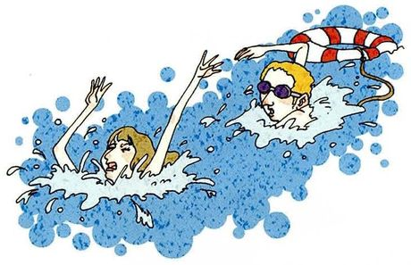
Lifeguard /ˈlaɪfɡɑːrd/
What you seeA woman struggling in the water with her arms up, and a lifeguard in sunglasses swimming towards her, pulling a red-and-white life ring.
The duties课本脚注：lifeguard = 救助遇险游泳者的人。日常：盯着水面、救人。更深一层：预防，比如提醒别人别去危险区域。
Say it like this①A lifeguard's job is to save swimmers who are in danger. ②A lifeguard watches the water all day and rescues anyone who gets into trouble. They're also responsible for basic first aid until an ambulance arrives. ③The rescue in the picture is the dramatic part, but most of a lifeguard's job is watching — and warning. A good lifeguard spots the swimmer drifting too far out and calls them back before anyone has to swim out with a ring. Like the police example, prevention is the real job.
02
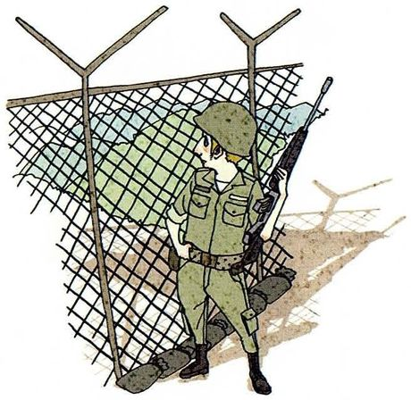
Soldier /ˈsoʊldʒər/
What you seeA soldier in a helmet and uniform, holding a rifle, standing guard beside a tall wire fence topped with barbed wire.
The duties日常：训练、站岗、守卫边界。核心：保卫国家。更深一层：军队最好的状态是让战争不发生。
Say it like this①A soldier's duty is to defend their country. ②A soldier is responsible for protecting the country and its borders, like the one in the picture guarding a fence. In peacetime they also help in disasters, like floods and earthquakes. ③The obvious duty is to fight if a war comes. But I'd say the deeper purpose is deterrence — being strong enough that nobody starts a war in the first place. And in China, many people think of soldiers first as the people who show up after an earthquake, which says a lot about what the job means in practice.
03
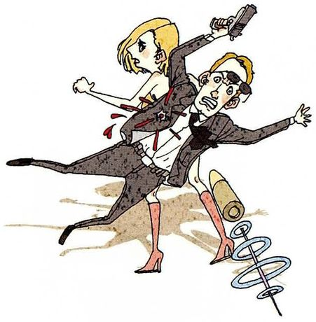
Bodyguard /ˈbɑːdiɡɑːrd/
What you seeA bodyguard in a suit diving in front of a frightened woman while a gun goes off — he's literally putting his body between her and the bullets.
The duties课本脚注：bodyguard = 保护重要人物免受人身攻击的人。核心：保护一个人。更深一层：提前发现危险，而不是挡子弹。
Say it like this①A bodyguard's job is to protect an important person from being attacked. ②A bodyguard stays close to their client and protects them from any physical danger — even, as in the picture, putting themselves in the way of a bullet. ③The picture shows the most extreme moment of the job, but a good bodyguard almost never gets there. Most of the work is planning routes, checking rooms and noticing the one person in a crowd who doesn't fit. If they ever have to jump in front of a gun, something has already gone wrong.
04
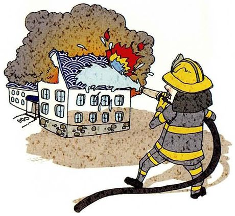
Firefighter /ˈfaɪərfaɪtər/
What you seeA firefighter in full gear and a yellow helmet aiming a hose at a building whose roof is in flames, black smoke pouring into the sky.
The duties日常：灭火、救人、救援事故。更深一层：防火检查和宣传。
Say it like this①A firefighter is responsible for putting out fires and saving lives. ②A firefighter puts out fires and rescues people trapped inside buildings. They also deal with car accidents, floods and other emergencies. ③Putting out fires is the visible part. But a lot of a firefighter's job is fire prevention — inspecting buildings, checking fire exits, teaching schools what to do. Every fire that never starts is a success nobody sees, which is the same point the police example makes.
05
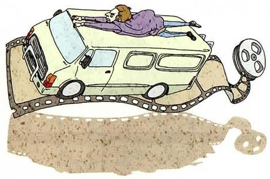
Stunt performer /ˈstʌnt pərˌfɔːrmər/
What you seeA person lying flat on the roof of a speeding van, clinging on, while the van drives along a strip of film towards a film reel.
The duties课本脚注：stunt performer = 在电影里表演危险动作的人。核心：替演员完成危险场面。更深一层：让危险看起来真实，但实际上安全。
Say it like this①A stunt performer does the dangerous scenes in a film instead of the actor. ②A stunt performer is responsible for the dangerous action in films — falls, fights, car chases, like lying on top of a moving van. They make it look real so the audience believes it. ③The job looks like being brave, but it's really about control. A stunt performer's duty is to make something look completely dangerous while it's actually planned to the centimetre. The real responsibility is to the whole crew: if one stunt goes wrong, people get hurt. So the best ones are the most careful people on set, not the boldest.
06
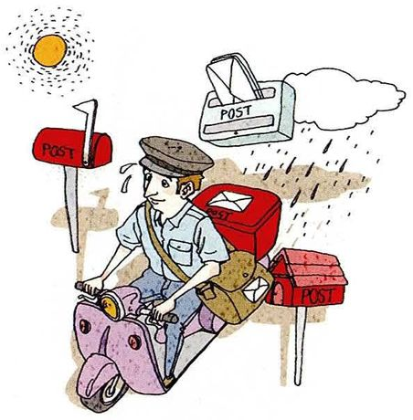
Mail carrier /ˈmeɪl ˌkæriər/
What you seeA mail carrier on a pink scooter with a full bag, sweating, passing red postboxes. Above him there's a hot sun on one side and a rain cloud on the other — he works in any weather.
The duties日常：每天按路线投递信件和包裹，风雨无阻。更深一层：在一些社区，邮递员是唯一每天上门的人。
Say it like this①A mail carrier delivers letters and parcels to people's homes. ②A mail carrier is responsible for delivering the mail on their route every day, in any weather — the picture shows both the sun and the rain. ③The basic duty is delivering mail reliably. But in some places, especially rural areas, the mail carrier is the only person who visits elderly people every day, so they notice when someone hasn't collected their post. That's a responsibility nobody wrote into the job, but it might be the most important one.
07
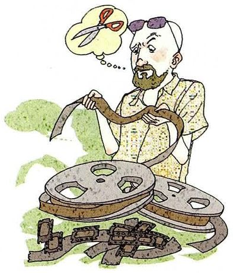
Movie director /ˈmuːvi dəˌrektər/
What you seeA bearded man in sunglasses holding up a long strip of film, with reels piled at his feet and a thought bubble showing a pair of scissors — he's deciding what to cut.
The duties用 be in charge of。日常：指导演员、拍摄、剪辑。更深一层：决定删掉什么。
Say it like this①A movie director is in charge of making a film. ②A director is in charge of the whole film — telling the actors what to do, choosing the shots, and working with the editor to put it together. ③The director is responsible for the vision of the film: everyone else has a part, but the director decides what the whole thing is. The picture gets it right with the scissors — a lot of directing is deciding what to throw away. A good film is often the result of the scenes you were brave enough to cut.
08
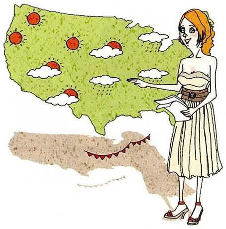
Weather forecaster /ˈweðər ˌfɔːrkæstər/
What you seeA woman in an elegant dress pointing at a large map covered with suns, clouds and rain symbols, holding her notes in the other hand.
The duties和第 26 课「天气预报」呼应。日常：分析数据、播报预报。更深一层：提前警告恶劣天气。
Say it like this①A weather forecaster tells people what the weather will be like. ②A forecaster studies weather data and explains the forecast to the public, usually on TV with a map like the one in the picture. ③The everyday duty is telling people whether to take an umbrella. But the serious responsibility is warning people about dangerous weather — typhoons, floods, heatwaves — early enough to act. A forecaster who's slightly wrong about sunshine doesn't matter much; one who misses a typhoon warning can cost lives.
09
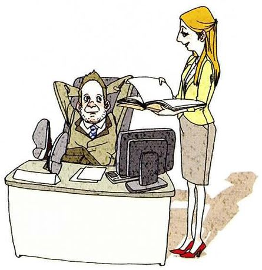
Secretary /ˈsekrəteri/
What you seeA boss leaning back in his big chair with his feet up on the desk, hands behind his head, while his secretary stands beside him holding an open folder and doing the actual work.
The duties日常：安排日程、处理文件和邮件、接电话。更深一层：让整个办公室正常运转。图里有个幽默：老板在休息，秘书在干活。
Say it like this①A secretary manages the boss's schedule and paperwork. ②A secretary is responsible for organising meetings, answering calls, handling documents and keeping the boss's calendar under control. ③On paper it's an assistant role, but in practice a good secretary keeps the whole office running — and the picture makes the joke clearly: the boss is relaxing while the secretary holds the files. Often the secretary knows more about what's going on than the boss does. Nowadays the job is usually called "personal assistant" or "office manager".
10
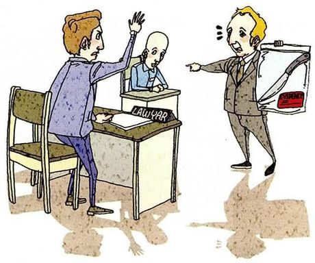
Lawyer /ˈlɔːjər/
What you seeA courtroom. A man at a desk marked LAWYER is half-standing with his hand raised to object, his client sitting behind him, while another lawyer across the room points and holds up a bag of evidence.
The duties这里是辩护律师。核心：代表并维护当事人的利益。更深一层：即使当事人可能有罪，也要保证他得到公正审判。
Say it like this①A lawyer's job is to defend their client in court. ②A defence lawyer represents the person who's been accused, gives them advice, and argues their case in court — objecting, as in the picture, when the other side goes too far. ③People often ask how a lawyer can defend someone who might be guilty. I'd say their duty isn't to get a guilty person off — it's to make sure everyone gets a fair trial, and that the evidence is tested properly. If defence lawyers didn't do that, innocent people would be convicted much more easily.
11
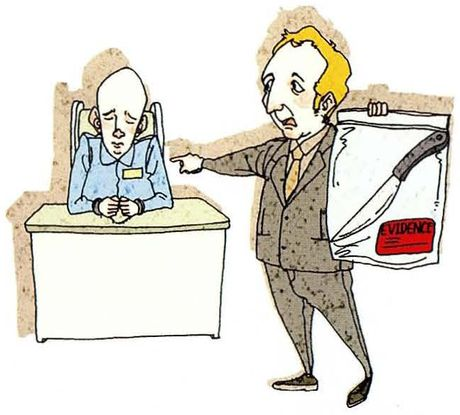
Prosecutor /ˈprɑːsɪkjuːtər/
What you seeA prosecutor in a suit pointing accusingly at a nervous, sweating man sitting at a desk, and holding up a plastic bag with a knife in it, labelled EVIDENCE.
The duties课本脚注：prosecutor = 在法庭上证明被告有罪的律师。和第 10 题是对手。更深一层：追求真相，而不只是定罪。
Say it like this①A prosecutor tries to prove in court that the accused person is guilty. ②A prosecutor represents the state, presents the evidence — like the knife in the bag — and argues that the defendant committed the crime. ③The obvious duty is to win the case against the accused. But I'd argue a prosecutor's real duty is to justice, not to winning. If they find evidence that the defendant is innocent, they're supposed to share it, even though it loses them the case. A prosecutor who only wants convictions is dangerous.
12
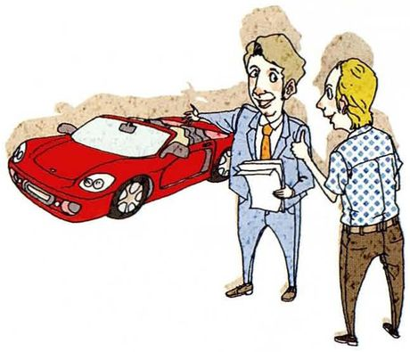
Salesperson /ˈseɪlzpɜːrsn/
What you seeA smiling salesman in a suit and tie holding a clipboard, gesturing towards a shiny red sports car, while a customer listens with his hands in his pockets.
The duties日常：介绍产品、回答问题、谈成交易。更深一层：诚实，帮客户找到真正适合的东西。
Say it like this①A salesperson's job is to sell products to customers. ②A salesperson explains the product, answers the customer's questions and tries to close the deal — like the man in the picture selling the sports car. ③The short-term duty is to sell. But I think a good salesperson's real responsibility is to help the customer buy the right thing, even if it's cheaper. A customer who feels tricked never comes back; one who feels helped comes back and brings friends. So honesty is actually the long-term sales strategy.
13
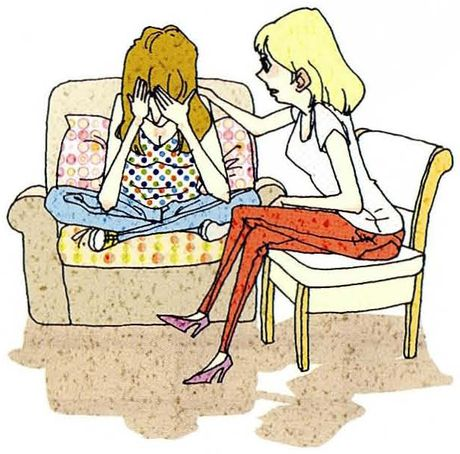
Counselor /ˈkaʊnsələr/
What you seeA young woman sitting cross-legged on a sofa with her face in her hands, crying, and a counselor sitting next to her, leaning in with a hand on her shoulder.
The duties心理咨询师 / 辅导员。核心：倾听、帮对方理清问题。更深一层：帮对方自己找到办法，而不是替他做决定；还要保密。
Say it like this①A counselor listens to people's problems and helps them deal with them. ②A counselor is responsible for listening to people who are struggling, helping them understand their feelings, and keeping what they say confidential. ③The main duty is listening — properly, without judging. But a counselor's deeper job is not to solve the problem for the person; it's to help them find their own way through it. Giving advice is easy. Helping someone reach their own decision is much harder, and much more useful.
14
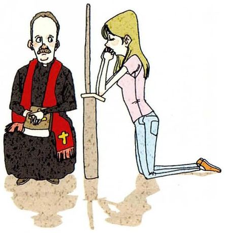
Priest /priːst/
What you seeA priest in black with a red stole sitting quietly on one side of a wooden screen, while a young woman kneels on the other side and whispers through it. It's a confession.
The duties描述性地回答，不评判信仰。职责：主持宗教仪式、照顾信众、倾听告解。更深一层：告解内容绝对保密。
Say it like this①A priest leads religious services and looks after the people in their church. ②A priest is responsible for leading services, visiting the sick, and, as in the picture, hearing confession — listening to people admit what they've done wrong. ③The picture shows confession, and the most striking duty there is secrecy: a Catholic priest is never allowed to reveal what he hears, even to the police. Whatever you believe, that's an interesting idea — a role whose whole value depends on keeping secrets. In some ways it's similar to a counselor or a doctor.
15
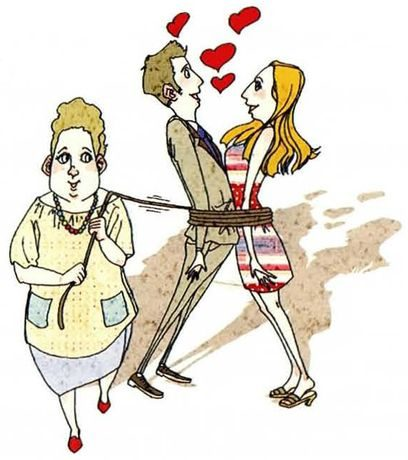
Matchmaker /ˈmætʃmeɪkər/
What you seeA plump middle-aged woman holding the end of a rope that's tied around a young man and woman, who are gazing at each other with hearts floating above them.
The duties课本脚注：matchmaker = 撮合恋爱或婚姻的人。核心：介绍合适的人。更深一层：撮合，不是强迫 —— 图里的绳子是个玩笑。
Say it like this①A matchmaker introduces people who might make a good couple. ②A matchmaker finds two people who seem to suit each other — similar backgrounds, ages, plans — and arranges for them to meet. In China, it's often an aunt or a family friend rather than a professional. ③The rope in the picture is a joke, but it points at the real line in the job: a matchmaker's duty is to introduce, not to push. The best ones understand both people well enough to see a match the two of them can't see yet — and then they step back. Dating apps do the introducing now, but they don't do the understanding.
05重点词汇（美式音标）
课首页脚注给了 7 个词，多数是本课的职业名称。下面另补了描述职责最常用的动词。
A · 课本脚注的 7 个词
词
音标
课上怎么用
中文
property
/ˈprɑːpərti/
protect people and property 财产。不可数时指所有物
财产
make up (for)
/meɪk ʌp/
make up for the damage 弥补。和 Lesson 4 的「和好」不同义
弥补
lifeguard
/ˈlaɪfɡɑːrd/
a lifeguard on duty
救生员
bodyguard
/ˈbɑːdiɡɑːrd/
hire a bodyguard
保镖
stunt performer
/ˈstʌnt pərˌfɔːrmər/
a professional stunt performer 也说 stuntman / stuntwoman
讲完职责，老师会转向你自己的责任：你的工作、你在家里、你对社会。这正好是 Part IV「What do you think?」的意思。
What are your duties as a graduate student?
Officially, I'm responsible for my research project, some teaching assistant work and keeping the lab equipment in order. But I'd say the most important duty is one nobody checks: being honest about my results. If I'm careless with data, it doesn't just affect my paper — other people build on it.
I'd say the prosecutor, because their decisions can take away someone's freedom. A firefighter or lifeguard saves lives too, but their duty is obvious. A prosecutor has to choose between winning and being fair, and nobody's watching closely when they make that choice.
不选最「英雄」的职业，而是选「最容易出问题的职责」，并说明为什么。这是有观点的回答。
Is it a lawyer's duty to defend someone they think is guilty?
Yes, I think so, even though it feels uncomfortable. Their duty is to make sure the trial is fair, not to decide guilt — that's the judge's job. If lawyers refused to defend people they suspected, the accused would be judged before the trial even started.
先表态，承认不舒服，再用「职责分工」（律师 vs 法官）来论证。这种「承认感受 + 讲道理」是成熟的表态方式。
Do you think duty is more important than personal happiness?
Not always, but more often than people today like to admit. If a firefighter only went in when they felt like it, the job wouldn't exist. I think the healthy version is choosing your duties carefully — and then keeping them even on the days they don't make you happy.
不走极端，给出一个有条件的立场：谨慎选择职责，然后坚守。这是 Part IV 观点题的典型高分回答。
What's a duty you have that nobody pays you for?
Calling my parents. Nobody checks, and nothing happens if I forget for a week. But I've noticed it matters more to them than almost anything else I do, so I treat it as a duty rather than something I do when I'm free.
Should matchmakers still exist when there are dating apps?
I think so. Apps are good at finding people, but they're bad at judging people. A matchmaker who knows both families can see things a profile can't show. The risk is the rope in the picture — pressure. As long as it's an introduction and not an obligation, I don't see a problem.
比较人和技术各自的强项，最后用图里的细节（绳子）给出界线。把看图和表态结合起来了。
07这节课最容易犯的错
这一课的错误集中在职责句型的搭配，以及几个职业相关的固定说法。
✗A firefighter is responsible for put out fires. ✓A firefighter is responsible for putting out fires.
for 是介词，后面接动名词 -ing。本课最高频的错误。
✗A firefighter kills the fire. ✓A firefighter puts out the fire.
「灭火」固定搭配是 put out a fire / fight a fire，不用 kill。
✗A police's duty is to catch criminals. ✓A police officer's duty is… / The police's job is…
police 是集合名词，指警方整体。说单个警察要用 police officer。
✗He is in charge for the whole film. ✓He is in charge of the whole film.
in charge of，不是 for。
✗Prevention is more important than solve crimes. ✓Prevention is more important than solving crimes.
比较的两边词性要一致：prevention（名词）对 solving（动名词）。
✗The lawyer protects the criminal. ✓The lawyer defends the accused / their client.
庭审前此人只是被告（the accused），不能直接叫 criminal。法庭辩护用 defend。
✗A salesperson must sell things as many as possible. ✓A salesperson tries to sell as many things as possible.
as many + 名词 + as possible，名词放中间。
✗It's too late to make up the damage after it's done. 说成 It's too late to remedy the damage after it done. ✓It's too late to make up for the damage once it's done.
课本原文是 make up the damage；现代口语更常用 make up for。注意 after it's done 里 is 不能省。
08五十分钟怎么用
和上一课一样，15 个职业不必逐个背。练熟句型和「更深一层」的思路，任何职业都能谈。
课前 10 分钟：只看第 02 节 A 表responsible for / supposed to / in charge of / job is to —— 各造一句。重点是 responsible for 后面接 -ing。